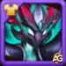
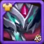

Guia da Super Titã Tenebris Hero Wars Mobile
- Por: Alexandre Domingos. .
Bem-vindo ao nosso guia completo sobre Tenebris em Hero Wars Alliance! Como um dos heróis das Trevas mais versáteis e poderosos, Tenebris traz habilidades únicas e um valor estratégico especial para suas composições de equipe. Este guia foi elaborado para ajudá-lo a dominar suas habilidades, priorizar seus artefatos e otimizar seu papel nas equipes das Trevas.
Principais Estatísticas da Super Titã Tenebris
| Atributo | Detalhes |
|---|---|
| Posição | Linha de Trás |
| Função | Super Titã |
| Estilo de Jogo: | Dano, Controle |
| Elemento Principal | Escuridão |
Tenebris Tier List 2025
| Uso | Classificação |
|---|---|
| Tier List de Arena | S+ |
| Tier List de Masmorra | A |
| Sinergia: | Todos os Titãs da Escuridão |

Super Titã Tenebris em Hero Wars
No campo de batalha em constante evolução de Hero Wars Alliance, a introdução do Super Titã Tenebris marca um momento crucial para as forças da Escuridão. Como o elemento final da equipe perfeita da Escuridão, Tenebris une todos os Titãs desse elemento e desperta seu verdadeiro poder. Com ataques poderosos e frequentes e a capacidade de fortalecer aliados, este Super Titã trará inúmeras vitórias aos guerreiros da Escuridão.
Prós e Contras de Tenebris em Hero Wars Alliance
Prós:
- Controle de Energia: Tenebris se destaca no controle da energia inimiga, impedindo que oponentes-chave usem habilidades poderosas.
- Dano Sustentado: Causa dano contínuo ao longo do tempo, o que pode desgastar os inimigos de maneira eficaz.
- Sinergia com Titãs das Escuridão: Melhora as habilidades dos Titãs da Escuridão aliados, tornando-os mais fortes.
- Transferência de Energia: Pode drenar energia dos inimigos e transferi-la para si mesmo, aumentando sua eficácia em combate.
- Disrupção: Suas habilidades desorganizam as formações e estratégias inimigas, tornando-o um ativo valioso em batalhas prolongadas.
Contras:
- Limitações de Alvo: As habilidades frequentemente visam inimigos específicos, que podem não ser sempre os alvos de maior prioridade.
- Dependência de Mortes Inimigas: Algumas habilidades dependem da morte de inimigos enquanto estão afetados por suas habilidades, o que pode ser situacional.
- Vulnerabilidade: Se não for protegido, Tenebris pode ser vulnerável a ataques inimigos e controle de multidão.
- Dependência de Timing: O uso eficaz de suas habilidades requer um timing preciso.
- Área de Efeito Limitada: As habilidades afetam principalmente alvos únicos ou áreas limitadas, reduzindo o impacto geral no campo de batalha.
Guia das Habilidades de Tenebris em Hero Wars Alliance
Habilidades de Tenebris em Hero Wars Alliance
1ª Toque do Abismo
Descrição: Amaldiçoa temporariamente o inimigo mais próximo, priorizando inimigos que ainda não foram afetados pela maldição. O inimigo amaldiçoado recebe dano a cada segundo e não pode restaurar energia. Se o inimigo morrer enquanto a maldição estiver em efeito, parte de seu ataque base e saúde é transferida para todos os Titãs da Escuridão aliados e um aliado com o maior ataque físico.
Análise: Toque do Abismo é uma habilidade de debuff potente que mira no inimigo mais próximo, tornando-o vulnerável a danos contínuos ao longo do tempo. A maldição impede o inimigo de recuperar energia, efetivamente desabilitando sua capacidade de usar habilidades poderosas. A sinergia da habilidade com os Titãs da Escuridão aumenta seu poder de combate, transferindo parte dos atributos do inimigo após sua morte, tornando-a estrategicamente benéfica em batalhas prolongadas.
2ª Sacrifício Eterno
Descrição: Mira no inimigo com a maior energia e queima sua energia, transferindo-a para Tenebris.
Análise: Sacrifício Eterno é uma habilidade tática que desorganiza as formações inimigas ao esgotar a energia de sua maior ameaça. Redirecionando a energia queimada para Tenebris, essa habilidade não só enfraquece o inimigo alvo, mas também capacita Tenebris a liberar ataques devastadores ou ativar suas próprias habilidades com mais frequência. Esta habilidade é crucial para controlar o ritmo das batalhas e virar a maré a favor da equipe da Escuridão, tornando Tenebris uma força formidável no campo de batalha.
Visão Geral das Habilidades de Tenebris
Compreender e dominar as habilidades de Tenebris em Hero Wars Alliance é essencial para utilizá-lo efetivamente em combate. Toque do Abismo e Sacrifício Eterno se complementam para controlar as ações dos inimigos, enfraquecer alvos prioritários e fortalecer os Titãs da Escuridão aliados, garantindo que Tenebris permaneça uma pedra angular da vitória em cada batalha.
Guia de Prioridade de Evolução de Artefatos para Tenebris em Hero Wars Alliance
Introdução
Escolher os artefatos certos e priorizar sua evolução é crucial para maximizar a eficácia de Tenebris, o poderoso Super Titã da Escuridão, em Hero Wars Alliance. Este guia descreve a ordem ideal para evoluir os artefatos de Tenebris para aprimorar suas capacidades de combate.
1. Selo de Ataque
O artefato Selo de Ataque deve ser priorizado como a primeira escolha para Tenebris. Aprimorar o Ataque Físico e a Saúde de Tenebris aumenta diretamente suas capacidades ofensivas e de sobrevivência no campo de batalha. Este artefato garante que Tenebris possa causar danos significativos enquanto se sustenta em batalhas prolongadas.
2. Ceifador de Ueptnis
Em seguida, concentre-se em evoluir o Ceifador de Ueptnis. Este artefato aumenta o Ataque Físico de Tenebris, aumentando ainda mais seu dano. Com o Ataque Físico aprimorado, Tenebris pode eliminar inimigos de forma eficiente e contribuir mais efetivamente para o sucesso de sua equipe nas batalhas.
3. Coroa da Escuridão
O artefato Coroa da Escuridão deve ser evoluído por último entre os artefatos de Tenebris. Embora forneça bônus valiosos, como dano extra contra Titãs de Fogo, Terra e Água, bem como defesa adicional contra esses Titãs, seu impacto é secundário em comparação com os benefícios ofensivos e defensivos diretos fornecidos pelo Selo de Ataque e Ceifador de Ueptnis.
Visão Geral da Evolução dos Artefatos de Tenebris
Seguindo este guia de prioridade de evolução de artefatos para Tenebris em Hero Wars Alliance, você pode otimizar seu desempenho no campo de batalha. Fortalecer o Selo de Ataque e o Ceifador de Ueptnis primeiro aumentará significativamente a eficácia de combate de Tenebris, garantindo que ele permaneça uma força formidável capaz de liderar os Titãs da Escuridão à vitória.
Melhor Skin para Tenebris Hero Wars Alliance
Descubra a ordem ideal de skins para o Tenebris em Hero Wars Alliance. Saiba quais skins evoluir primeiro para maximizar seu poder de batalha e impacto nas lutas.

Skin Padrão
Concede +196.800 de Ataque Físico, aumentando significativamente o dano da habilidade suprema de Tenebris.
Prioridade de Evolução: Alta – Primeira prioridade, pois aumenta muito o poder ofensivo de Tenebris.

Skin Primordial
Concede +2.627.975 de Vida, melhorando a sobrevivência de Tenebris em batalhas prolongadas.
Prioridade de Evolução: Média – Prioridade secundária, útil para durabilidade, mas menos impactante que o dano.
Melhores Equipes com Super Titã Tenebris em Hero Wars Alliance
A tabela abaixo apresenta as melhores e mais populares equipes atuais para o Super Titã Tenebris:
| # | Titãs |
|---|---|
| 1 | Tenebris, Keros, Mort, Solaris, Brustar |
| 2 | Tenebris, Keros, Mort, Iyari, Brustar |
| 3 | Tenebris, Keros, Mort, Araji, Brustar |
| 4 | Tenebris, Keros, Mort, Hyperion, Brustar |
| 5 | Tenebris, Keros, Mort, Eden, Brustar |
| 6 | Tenebris, Keros, Mort, Angus, Brustar |
| 7 | Tenebris, Keros, Mort, Brustar, Sigurd |
| 8 | Tenebris, Mort, Solaris, Rigel, Brustar |
| 9 | Tenebris, Mort, Solaris, Iyari, Brustar |
| 10 | Tenebris, Amon, Solaris, Iyari, Rigel |
Conclusão do Guia de Tenebris
Em conclusão, este guia fornece uma visão abrangente de Tenebris em Hero Wars Alliance, focando em suas habilidades, prioridades de artefatos e seu papel estratégico dentro das equipes da Escuridão. Priorizando a evolução do Selo de Ataque e Ceifador de Ueptnis, os jogadores podem melhorar significativamente as capacidades de combate de Tenebris, garantindo que ele permaneça uma força formidável no campo de batalha.
Compreender as habilidades de Tenebris, como Toque do Abismo e Sacrifício Eterno, é crucial para aproveitar suas habilidades de forma eficaz nas batalhas. Essas habilidades permitem que Tenebris controle os inimigos, enfraqueça alvos de alta prioridade e fortaleça os Titãs da Escuridão aliados, tornando-o um recurso inestimável em qualquer composição de equipe.
Fique atento para mais atualizações e guias sobre Tenebris, incluindo composições de equipe e estratégias avançadas. Visite nossa página regularmente para acompanhar os últimos desenvolvimentos e liberar todo o potencial de Tenebris em Hero Wars Alliance!
Sugestões de Vídeo:
Explore novas habilidades com nossos heróis em destaque!
 Titã Brustar Hero Wars Mobile
Titã Brustar Hero Wars Mobile Titã Keros Hero Wars Mobile
Titã Keros Hero Wars Mobile Titã Mort Hero Wars Mobile
Titã Mort Hero Wars MobileCompartilhe Sua Opinião!
Você gostou do nosso Guia da Super Titãs Tenebris? Há algo que não entendeu ou gostaria de sugerir mudanças? Convidamos você a se juntar à nossa sessão de comentários na página do Alexandre Games Blog. Não hesite em expressar sua opinião, clarificar suas dúvidas e compartilhar sua sugestões.
Clique no botão abaixo para começar: